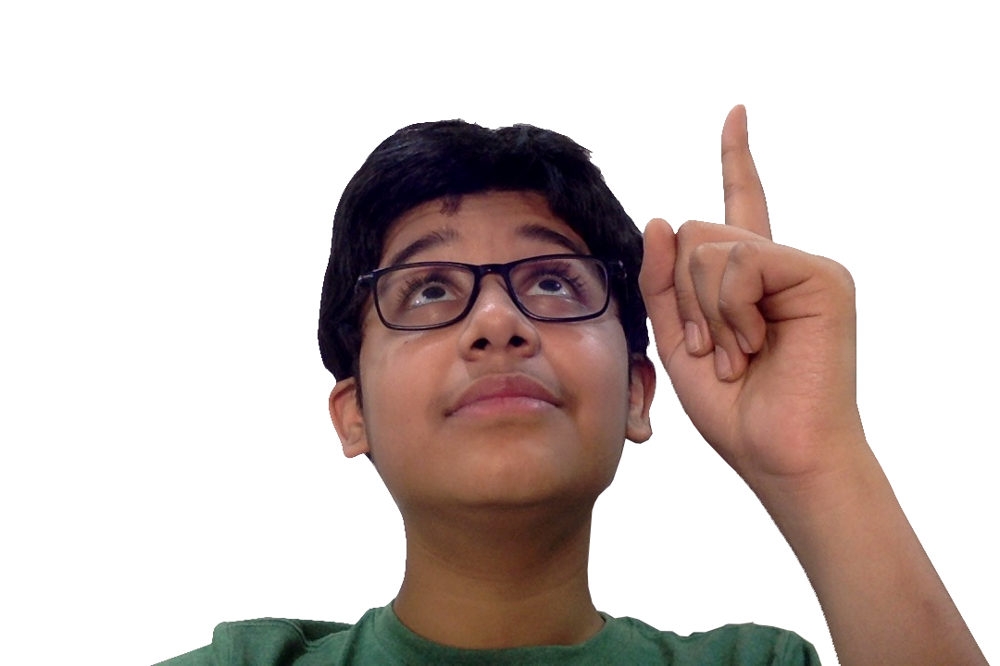

About Me
Hi, I'm Aniket Modani. I'm an 8th grader in Oberoi International School and this is my website for my design summative project. The website is made based on my knowledge of HTML, CSS, as well as a bit of Javascript.
Fake news is a very common problem in the modern world. I believe that if you're forewarned, it'll be a lot easier to prevent getting tricked. Especially in an age where everything spreads very quickly, it's important to learn how to identify fake news. I made this website to spread that message and tried to do so in the most user friendly and easy to understand way possible. Hope this helps you understand and identify fake news!
